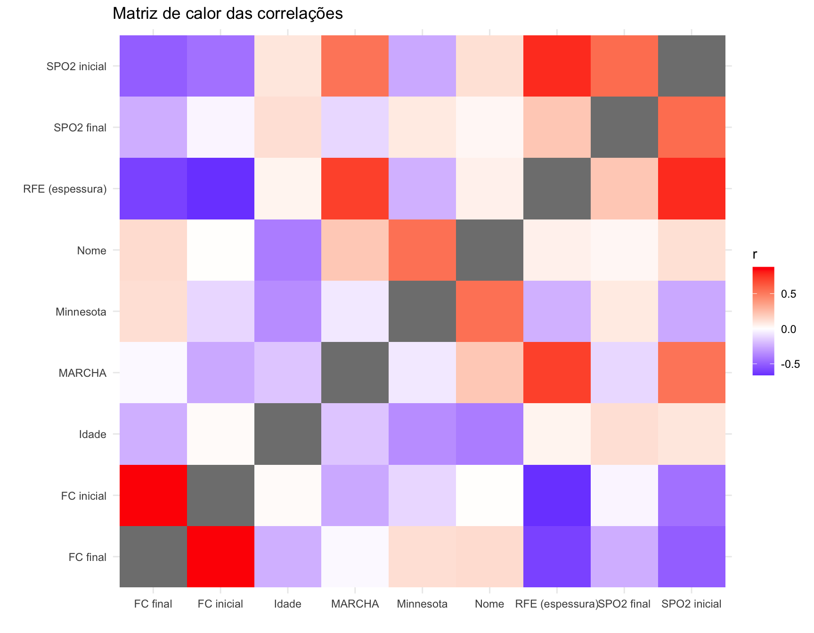

Espessura do Reto Femoral como Preditor da Capacidade Funcional: Uma Análise de Regressão em Pacientes Sob Reabilitação
análise
Metodologia
A coleta de dados seguiu um protocolo transversal para avaliar a relação entre morfometria muscular, percepção de sintomas e capacidade funcional.
Avaliação Morfométrica: A espessura do músculo Reto Femoral (RFE) foi mensurada via ultrassonografia em repouso, utilizando a média de três medidas no ponto médio entre a espinha ilíaca anterossuperior e a borda superior da patela.
Qualidade de Vida: Aplicou-se o questionário Minnesota Living with Heart Failure Questionnaire (MLHFQ), onde escores maiores indicam pior qualidade de vida.
Capacidade Funcional: A variável dependente (MARCHA) foi obtida através da distância percorrida (em metros).
Monitorização Hemodinâmica: Foram registrados a Frequência Cardíaca (FC) e a Saturação Periférica de Oxigênio (\(SPO_2\)) em repouso e imediatamente após o esforço.
Tabela de dados
No período de 2025-07-11 a 2025-12-15, foram realizados 12 registros de acompanhamento de reabilitação cardiopulmonar, cujas métricas (variáveis) estão evidenciadas na tabela abaixo:
Matriz de Correlação
A Matriz de Correlação abaixo foi confeccionada com a finalidade de evidenciar possíveis relações entre as variáveis coletada na pesquisa:

Análise Estatística
Os dados foram analisados através de modelos de regressão linear múltipla e simples para identificar os principais preditores da capacidade funcional, mensurada pela distância percorrida na MARCHA.
Análise dos Preditores Funcionais
A análise inicial considerou a influência da qualidade de vida (Minnesota) e de variáveis fisiológicas (SPO2 final). No entanto, o modelo de regressão linear múltipla revelou que a percepção subjetiva de sintomas (Minnesota: \(p = 0,67\)) e a oxigenação terminal (SPO2: \(p = 0,23\)) não apresentaram significância estatística como preditores independentes da performance motora nesta amostra.
O Papel da Espessura do Reto Femoral (RFE)
O modelo final, mais parcimonioso e com melhor ajuste (\(R^2_{adj} = 0,45\); \(p < 0,01\)), isolou a espessura do reto femoral como o preditor mestre da capacidade funcional.
Significância Estatística: A variável RFE apresentou um forte valor preditivo (\(p = 0,009\)), indicando uma relação sólida entre a massa muscular periférica e a mobilidade.
Magnitude do Efeito: O coeficiente de regressão (\(\beta = 221,59\)) sugere que, para cada aumento de 0,1 cm na espessura do músculo reto femoral, projeta-se um ganho clínico de aproximadamente 22 metros na distância de marcha.
Call:
lm(formula = MARCHA ~ `RFE (espessura)`, data = data)
Residuals:
Min 1Q Median 3Q Max
-27.05 -14.98 1.38 17.34 24.93
Coefficients:
Estimate Std. Error t value Pr(>|t|)
(Intercept) -17.70 21.71 -0.815 0.43403
`RFE (espessura)` 221.59 69.32 3.197 0.00955 **
---
Signif. codes: 0 '***' 0.001 '**' 0.01 '*' 0.05 '.' 0.1 ' ' 1
Residual standard error: 19.54 on 10 degrees of freedom
Multiple R-squared: 0.5054, Adjusted R-squared: 0.4559
F-statistic: 10.22 on 1 and 10 DF, p-value: 0.009546Implicações Clínicas para a Fisioterapia
Estes achados reforçam a hipótese de que a limitação funcional nesta coorte é de origem periférica (muscular) em vez de puramente ventilatória ou baseada apenas na percepção de sintomas. A ausência de correlação significativa com o score de Minnesota sugere um hiato entre a percepção subjetiva do paciente e sua real reserva de força.
Conclusão do Relatório
As estratégias de reabilitação devem priorizar o treinamento de força e hipertrofia de membros inferiores. A monitorização da espessura muscular via ultrassonografia à beira-leito (POCUS) demonstra ser um biomarcador sensível e fidedigno para acompanhar a evolução funcional e guiar a progressão de carga no plano terapêutico.
Limitações do Estudo
Embora os resultados apresentem significância estatística para a variável muscular, este relatório deve ser interpretado considerando as seguintes limitações:
Tamanho Amostral: O “n = 12” limita a generalização dos achados (poder estatístico reduzido para detectar efeitos menores de variáveis como o Minnesota).
Natureza Observacional: Por ser um corte transversal, os dados estabelecem associação e predição, mas não causalidade direta.
Variabilidade Individual: Fatores como comorbidades específicas e nível de atividade física prévia não foram controlados no modelo de regressão atual.